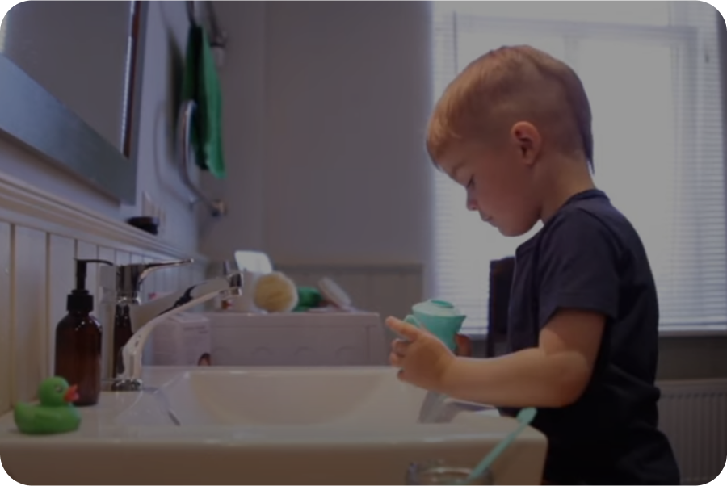
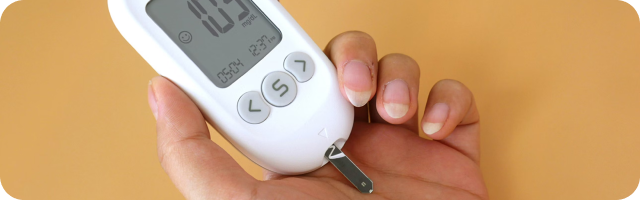
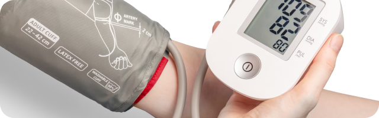

Naše služby pro vaše zdraví
Naše zdravotnické zařízení nabízí široké spektrum služeb
přizpůsobených potřebám našich pacientů. Na této stránce najdete všechny důležité informace o
poskytované péči, abyste věděli, jak probíhá léčba u nás.
Odběry
Preventivní prohlídky
Sledování (dispenzarizace) onemocnění
Posudek na řidičský průkaz
Předoperační vyšetření
Dočasná pracovní neschopnost
Návrh na lázeňskou péči
Očkování
Infůzní stacionář
Chirurgická a převazová péče
Doporučujeme se objednat s časovým předstihem přes portál
EMMY anebo na recepci.
Posudek se vydává se na základě zhodnocení:
- Prohlášení řidiče ke své zdravotní způsobilosti k řízení motorových vozidel – tento formulář dostanete v naší ordinaci před vyšetření anebo je možné jej stáhnout na naších internetových stránkách
- Lékařské prohlídky se zaměřením na celkový zdravotní stav a zejména nemoci vylučující řízení – vyšetřen zahrnuje orientační vyšetření zraku, sluchu a barvocitu. Lékař provádí orientační neurologické a interní vyšetření. U osob nad 65 let se vyšetření zahrnuje test mentálního stavu, orientační test schopnosti reaktivity a také zdatnosti seniora. Selektivně se vyžaduje dopravně psychologické vyšetření.
- Výsledků odborných nálezů pokud je pacient v soustavné péči pro nemoc, která vylučuje nebo podmiňuje zdravotní způsobilost řízení (zprávy psychiatra, neurologa, kardiologa, diabetologa včetně oční zprávy). Důrazně doporučujeme přinést aktuální nálezy specialistů.
K vyšetření a vystavení posudku doneste:
- Platný občanský a řidičský průkaz
- Korekci zraku (brýle, kontaktní čočky)
- Vyplněným prohlášení řidiče o svém zdravotním stavu
- Aktuální nálezy odborných lékařů (zejména psychiatr, neurolog, kardiolog, diabetolog, oční)
Kdo musí podstupovat pravidelné prohlídky?
- Držitel řidičského oprávnění skupiny 1 (AM, A1, A2, A, B1, B a B+E) nejdříve 6 měsíců před 65 rokem a poté v 68 let. Od 68 let se posudek vyžaduje co 2 roky.
- Řidiči profesionálové a řidiči nákladní dopravy skupiny 2 (C1, C1+E, C, C+E, D+, D1+E). Frekvence se vyžaduje dle aktuálně platné legislativy včetně psychologického vyšetření (zákon č. 361/2000 sb. o provozu na pozemních komunikacích a o změnách některých zákonů (zákon o silničním provozu)
Posudek k řízení motorových vozidel není hrazen ze
zdravotního pojištění (viz. aktuální platný ceník)
Dokumenty ke stažení

Prohlášení posuzované osoby ke své zdravotní
způsobilosti – řízení motorových vozidel
Žádost o posouzení zdravotní způsobilosti k řízení
Obecné preventivní a léčebné doporučení
Desatero doporučení pro kvalitní spánek (spánková
hygiena)
- Spěte v příjemném prostředí
- Před spaním si dopřejte dostatek času na zklidnění
- Lůžko je určeno pro spánek a intimní život
- Pravidlo 15 minut (pokud neusnete do 15 minut, věnujte se přechodně jiné činnosti, nejlépe četbě)
- Určete si pravidelný čas vstávání
- Buďte během dne aktivní, a to jak fyzicky, tak duševně
- Dávejte pozor na to, co svému tělu dáváte před spánek (zejména tekutiny, lehké drogy)
- Vystavujte se co nejvíce přirozenému světu, hlavně brzy ráno
- Obrazovky a elektronická zařízení (mobily) spánku škodí
- Plánujte chytře svá zdřímnutí během dne

 Video Rhino Horn Junior Estonia
Video Rhino Horn Junior Estonia
Doporučení pro domácí léčbu nachlazení
- Vyvarujte se zvýšené fyzické činnosti, dostatečně odpočívejte a spěte
- Pijte dostatečné množství tekutiny (min 30ml/kg/den) a množství upravte v závislosti na pocení
- Nezapomínejte na očkování a to nejenom ve stáří (očkování proti chřipce, COVIDU, RS viru, pneumokoku, černému kašli). Výrazné je doporučení pro očkování během těhotenství!
- Horečku tlumte až pokud vystoupí nad 38 stupňů. Horečku snižujeme zábaly anebo volně dostupnými léky z lékárny. Ideálním lékem je Paracetamol v maximální dávce 4000mg/den anebo u současných bolestech Ibuprofen v maximální dávce 1200mg/den.
- Při rýmě užívejte volně dostupné nosní spreje z lékárny po domluvě s lékárníkem. Vhodné jsou spreje a konvičky se solnými roztoky k proplachům nosu (Rhino horn - https://www.youtube.com/watch?v=wZdt4ooqf44). K uvolnění nosu jsou vhodné také prsní balzámy např. thymiánová mast nebo krém.
- Při kašli sledujte charakter Vašeho kašle. V počátcích nemoci a také přes den se hodí sirupy na vlhký kašel, které podporují vykašlávání (Mucosolvan, Ambrobene, ACC long šumivé tablety). Při suchém kašli nebo na noc jsou ideální prostředky, které kašel tlumí (Stop
- Při bolestech v krku kloktejte solnými roztoky, v lékárně zakupte Vincentku anebo pastilky doporučené lékárníkem. V případě angíny jsou vhodné Priessnitzové krční zábaly. Kousek látky nebo kapesníku namočte do vlažné vody a přiložte na krk. Mokrou látku překryjte igelitovým sáčkem a poté suchým ročníkem.
- Přechodně zvyšte příjem vitamínu C (1000mg/den) a Zinku (75mg) hned na začátku nemoci
Video Rhino Horn Junior Estonia
Doporučení při průjmovitém onemocnění
- Dostatečný přísun tekutin, vhodný je černý čaj, nesycené minerální vody, případně rehydratační roztoky (buď z lékárny či roztok připravený z 1l vody, 8 lžiček cukru, 1 lžičky soli a 1 šálku neslazeného ovocného čaje či dvou pomerančů), při zvracení jsou vhodné chladné tekutiny podávané v malých dávkách
- Nevhodné jsou ovocné a zeleninové šťávy, džusy, perlivé nápoje, káva, alkohol či Coca-Cola.
- Vhodné jsou rýžové polévky, bramborová a rýžová kaše, starší pečivo, dietní suchar
- Z ovoce jsou vhodné banány, strouhaná jablka bez slupek
- Po zmírnění obtíží je vhodné přecházet pomalu na normální stravu a vyloučit zejména tučná, přepalovaná jídla, nadýmavá ovoce a zeleniny, silně kořeněná jídla a alkohol.
Zde najdete několik dalších tipů pro prevenci:
Domácí měření krevního tlaku (cíl hodnot pod 135/90)

Doporučení při náhlém zvýšení krevního tlaku

Režim hypertonika (nemocného léčeného na vysoký
tlak)

Doporučení k zabránění vzniku prediabetu a cukrovky
Doporučení k prevenci osteoporózy